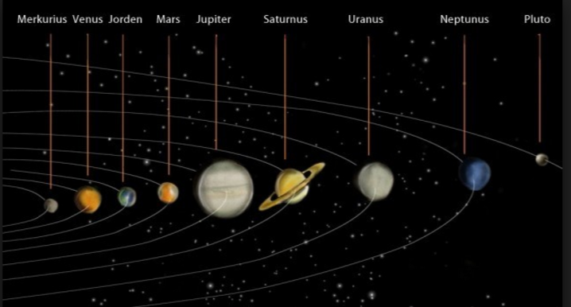

Jorden
Jorden är den tredje planeten från solen och den största av de så kallade stenplaneterna i solsystemet. Jorden är hemvist för alla kända levande varelser, inklusive människan. Dess latinska namn, Tellus eller Terra används ibland om den, och astronomer betecknar den ibland med symbolen ⊕ eller ♁. Jorden har en naturlig satellit kallad månen, eller Luna på latin.
Med flera miljoner arter är jorden den enda himlakropp där liv existerar. Planeten bildades för 4,54 miljarder år sedan och liv uppstod inom en miljard år därefter (äldsta tecken på liv är ett kol-lager 3,8 miljarder år gammalt, äldsta säkra spår av celler är stromatoliter 3,5 miljarder år gamla)[10]. Sedan dess har jordens biosfär markant förändrat atmosfären och andra icke biologiska förhållanden, vilket till exempel tillåtit aerobiska organismer att utvecklas i den syrerika miljön.
Sedd från rymden är jorden formad som ett nästan perfekt klot. Cirka 71 % av ytan är täckt av hav med saltvatten, återstoden består av öar och kontinenter. Jordens inre är fortsatt aktiv med en relativt fast mantel, en flytande yttre kärna som genererar ett magnetfält, samt en fast inre kärna främst bestående av järn. Jordskorpan, jordens yttre lager, är uppdelad i en rad olika segment, kallade kontinentalplattor, som långsamt rör sig över ytan. Jorden har en atmosfär som till största delen består av kväve (nitrogen) 78 % och syre (oxygen) 21 %. Jorden samverkar genom gravitationskraften med alla andra himlakroppar, även om solen är helt dominerande genom sin stora massa och relativt korta avstånd, även om till viss del även månen påverkar jorden, främst i form av tidvattenfenomen. Jorden roterar ett varv runt solen på 365,242 19 dagar.[11] För att kompensera för att det ej är ett jämnt antal dagar finns skottår. Jordens rotationsaxel är vinklad 23,4° mot en linje som är vinkelrät mot omloppsplanet, vilket skapar årstider på ytan. Jordens enda naturliga satellit, månen, orsakar havens tidvatten, stabiliserar axellutningen och saktar långsamt ner planetens rotation. Ett bombardemang av kometer under jordens tidiga historia gav upphov till mycket av vattnet i haven. Sedan dess har nedslag av större asteroider vid ett flertal tillfällen orsakat våldsamma katastrofer på jordens yta, mest känd är den som troligen orsakade utrotningen av den tidigare djurtypen dinosaurier (för cirka 65 miljoner år sedan). Planetens mineral och de många produkterna av biosfären bidrar med resurser som används för att försörja jordens befolkning. Invånarna är uppdelade i omkring 200 självständiga stater som samverkar med varandra genom diplomati, resor, handel och militära handlingar. Den första levande varelsen i omloppsbana runt jorden var hunden Lajka som med människans hjälp skickades upp i en satellit 1957. Människan själv lämnade jorden första gången 1961 då Jurij Gagarin nådde inre rymden.
Uppkomst
För 4,54 miljarder år sedan [12][13][14] bildades jorden och de andra planeterna ur solnebulosan, en skivformad massa av stoft och gas som blev över när solen föddes. Uppbyggandet av jorden genom ackretion var i stort sett över inom 10–20 miljoner år.[15] Till en början var jorden en smält och glödande massa, men efterhand kyldes de yttre delarna ner såpass mycket att vatten började ackumuleras i atmosfären och regn falla mot ytan vilket ledde till att en fast yttre skorpa bildades. Månen bildades strax därefter, möjligen som ett resultat av en kollision mellan jorden och en annan planet av ungefär Mars storlek.[16] En stor del av denna materia skulle ha stannat på jorden medan resten slungades tillbaka ut i rymden. Av den materia som kastades tillbaka ut i rymden skulle en viss del hamnat i omloppsbana runt jorden, och det är ur denna materia som månen sedan tros ha skapats (genom gravitationens successiva hopslagning av olika element i omloppsbanan).[17]
Genom utgasning och vulkanisk aktivitet skapades en tidig uratmosfär. Kondensation av vattenånga tillsammans med tillförd is från asteroider, kometer och andra objekt i det tidiga solsystemet skapade jordens hav.[18] Till en början var haven så omfattande att det nästan inte fanns någon landmassa, men de har efterhand minskat i omfattning. Under de senaste 2 miljarder åren har kontinenternas area fördubblats.[19][20] Sett över en geologisk tidsskala på flera hundra miljoner år har jordens yta kontinuerligt förändrats. Kontinenterna rör sig över ytan och bildar ibland en superkontinent. För ungefär 750 miljoner år sedan började en av de tidigaste kända superkontinenterna, Rodinia, brytas isär. Kontinenterna fördes sedan åter samman och bildade Pannotia för 600–540 miljoner år sedan och slutligen Pangaea som bröts isär för 180 miljoner år sedan.[21]